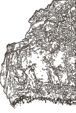
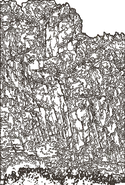
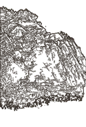
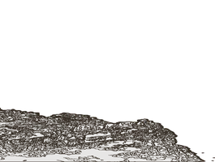
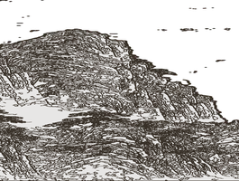
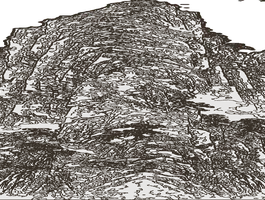
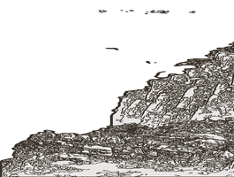
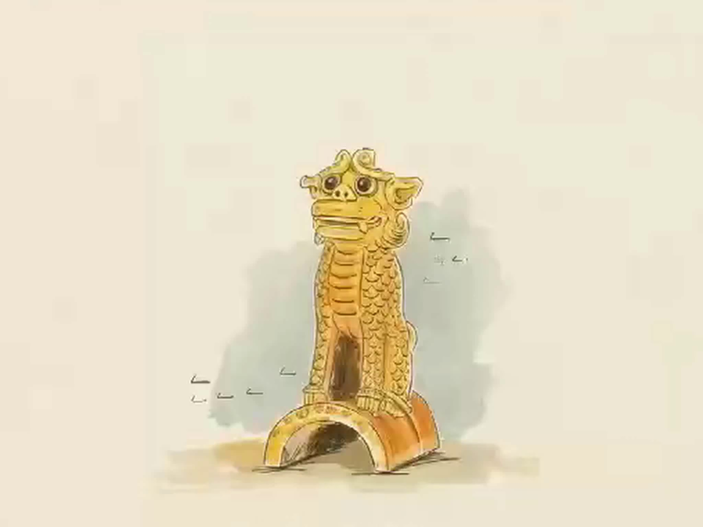

永乐大殿 · 营造前瞻考据
三清道境 · 整体大搬迁 / 天然矿物色 / 减柱造力学
点击展开营造考据
▸
原构
水库迁移

重彩
朝元真容

力学
减柱空间


北魏太和十五年（491年），古代哲匠悬于金龙峡百丈绝壁，依崖开凿石孔，半插横梁构筑殿宇。整座建筑悬于崖壁中段，上依危岩、下临深谷，创下中国古建史上的悬空奇迹。

崖下立柱实非主力承重结构，柱头与楼阁梁架间留有微小暗隙，平时多处于轻荷甚至虚悬状态。唯有殿阁重载或遇地震晃动时，立木才受压承重，与悬挑横梁虚实互补以化解外力。

承托整座楼阁的核心，在于深入崖壁内部的‘铁镦飞梁’。工匠在岩石中凿出深孔，插入经桐油浸泡防腐的木梁，并在孔洞尽头打入木楔——上方荷载越重，孔内木楔咬合越紧，牢牢挑起几十吨重的殿阁。

建筑选址于峡谷绝壁天然内凹处。上方凸出的天然崖石有效阻隔了崖顶落石与暴雨山洪；谷深壁立，终年日照不足两时辰，免受烈日与狂风侵蚀，木构得以历千五百年不糟朽。
三清道境 · 整体大搬迁 / 天然矿物色 / 减柱造力学



